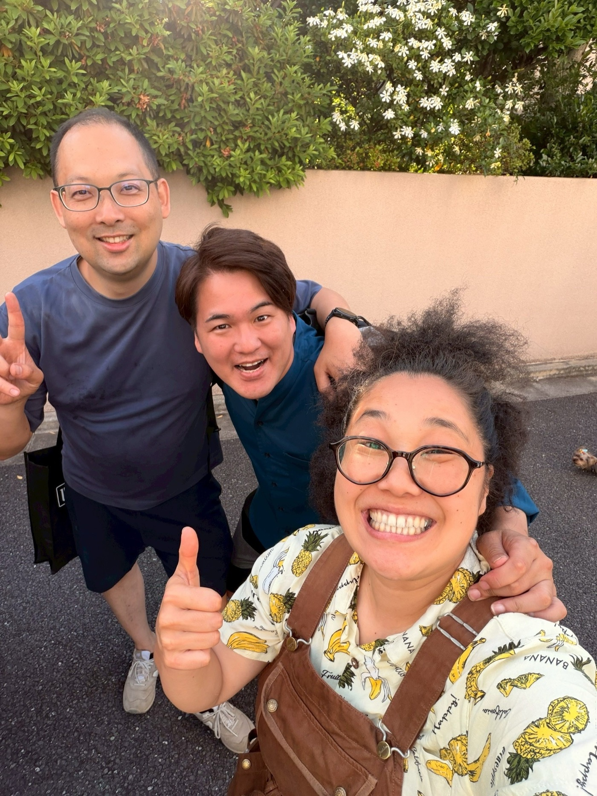

ABOUT
Grillist Basic Courseの4つの特徴
座学ではなく、火の前で。自分の手で炭を扱い、焼いて、測って覚える約3時間半です。

自分の手でやる
チムニースターターでの着火、2ゾーンファイヤーの炭の配置、蓋とベントの操作。デモを見るだけでなく、全部自分の手でやって、温度計の針が動くのを見ながら覚えます。

5品で技術を身につける
グリル野菜、ソーセージ、スパイスチキン、杉板サーモン、BBQピザ。5品それぞれに「学ぶ技術」が割り当てられていて、直火・間接焼き・蓋・中心温度を一気に体験できます。

焼いたら、食べる
自分で火を入れたものを、その場でみんなで食べます。「普通の食材が、異常に美味しくなる」体験がいちばんの教材です。

6名程度の少人数制
Weber Grill Academyの初級・中級・上級を修了したあんちゃんが、6名程度の少人数で手元まで見ながら教えます。道具はすべてこちらで用意。手ぶらでOKです。
TEACHER
教えるのは、あんちゃん。
あんちゃん（石原 杏莉）
蓋を閉めた炭のグリルで、低温でゆっくり火を通していくバーベキューを5年以上続けてきた、YORON BBQのグリリスト。山根と植田がそのバーベキューに出会って強烈に感動したことが、このコミュニティの始まりです。
Weber Grill Academyの初級・中級・上級コースを修了したチームの実践記録が、この講座の教科書。当日は、その記録のいちばん美味しいところを、火を入れながらお渡しします。
Instagram @afro_anriCOURSE
Grillist Basic Course｜初級編
10月・11月の全3回は、すべてこの初級編。どの回に来ても同じ内容なので、都合の合う回を選んで申し込めます。
Grillist Basic Course — BBQの基本動作を、一通り自分で。
火を起こし、火をコントロールし、食材に合わせて焼き分ける。デモ見学ではなく、参加者自身が炭を扱い、食材を焼き、温度を測りながら身につける実践型入門講座です。
学ぶ内容 ①炭・火の基本
- 炭の種類・特徴
- 適切な炭の量
- チムニースターターの使い方
- 炭の安全な着火・取り扱い
②2ゾーンファイヤー
- Direct（直火）とIndirect（間接）の違い
- 炭の配置方法
- 食材によるゾーンの使い分け
- 焦げる・中が生など、よくあるBBQの失敗と原因
③グリルの温度管理
- 蓋をする意味
- 上下ベントによる温度調整
- グリル内温度の考え方
- 「火を強くする」のではなく「火をコントロールする」という基本
④食材の温度管理
- 食材用温度計の使い方
- 中心温度の測り方
- 時間や見た目だけに頼らない焼き上がり判断
MENU — 5品を使った実践調理
5品それぞれに、学ぶ技術がある。
メニューは「作る料理」であると同時に「身につける技術」。1品ずつ、直火・間接・蓋・中心温度を実際に使い分けます。
| メニュー | 主に学ぶ技術 |
|---|---|
| グリル野菜 | 直火・焼き目・火力判断 |
| ソーセージ | 直火と間接焼きの使い分け |
| スパイスチキン | 間接焼き・蓋・中心温度 |
| 杉板サーモン | 直接焼き・杉板・香り・蓋の効果 |
| BBQピザ | グリルをオーブンとして使う方法 |
GOAL — この講座のゴール
BBQの基本動作を、自分で一通りできるように。
受講後に参加者が、「自分で炭を起こす → 2ゾーンを作る → 温度をコントロールする → 食材を適切な場所に置く → 中心温度を確認して仕上げる」というBBQの基本動作を、自分で一通りできる状態を目指します。
Grillist Basic Course受講生は、その後のアドバンスコースを受講できます。
SCHEDULE 2026
年内の開催予定
日程・会場は決まり次第、コミュニティLINEでいちばん最初にご案内します。
RESERVE — 講座の申込
参加したい回を選んで、申し込む。
各回約3〜3.5時間・6名程度・11,000円（税込）。会場・開始時間の詳細は、お申込みのメールアドレスへいちばん最初にご案内します。